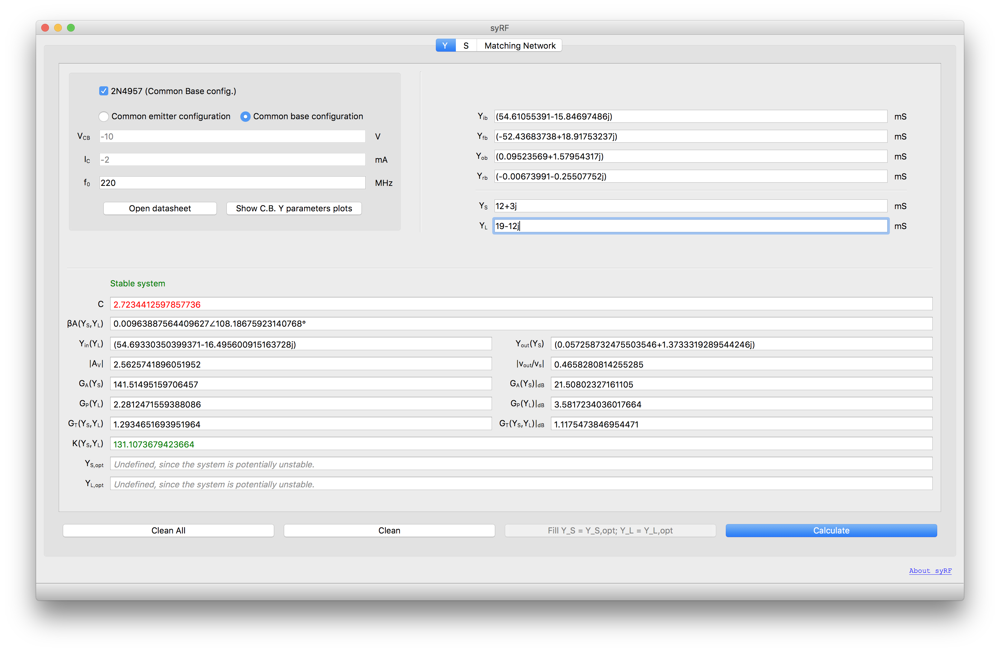
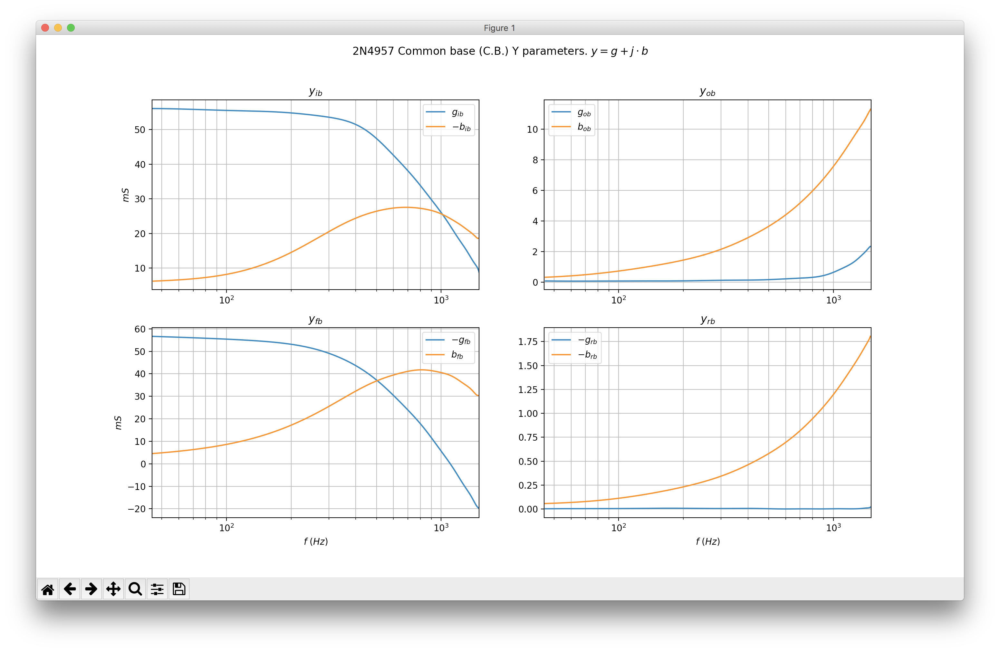
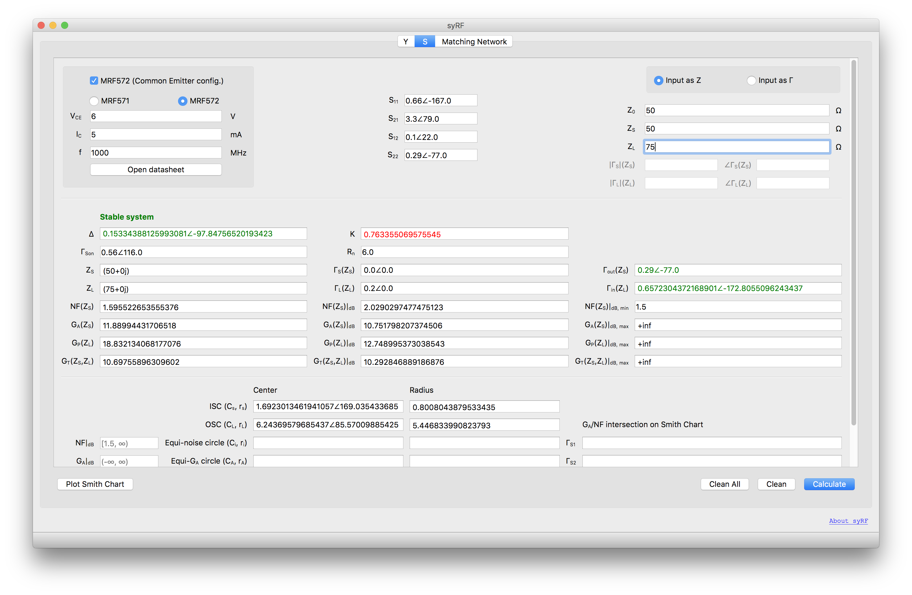
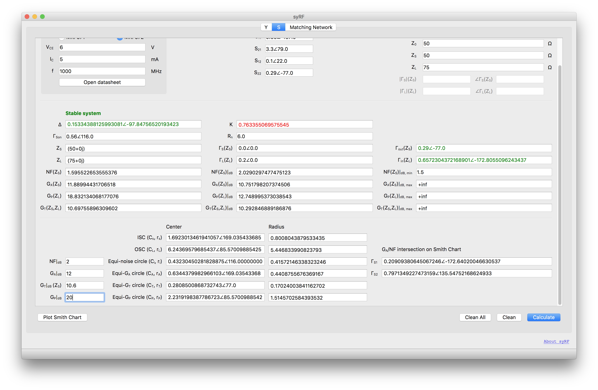
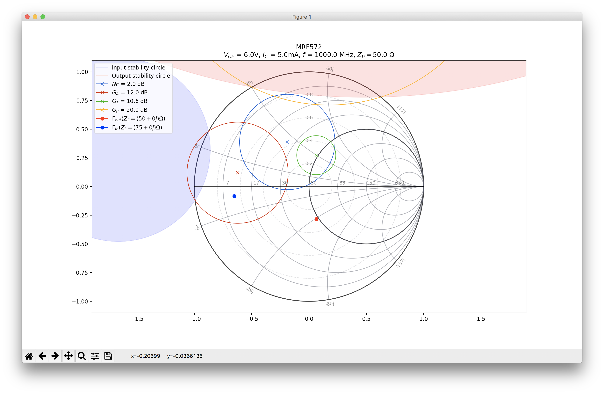
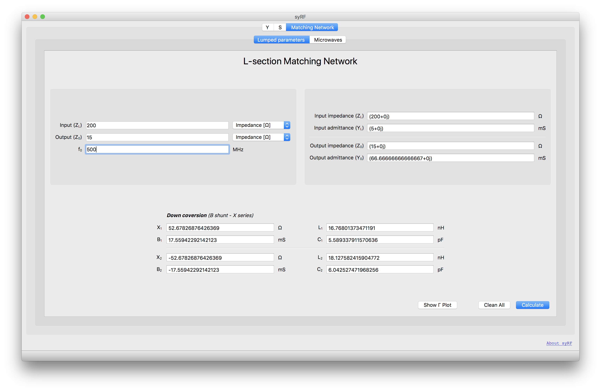
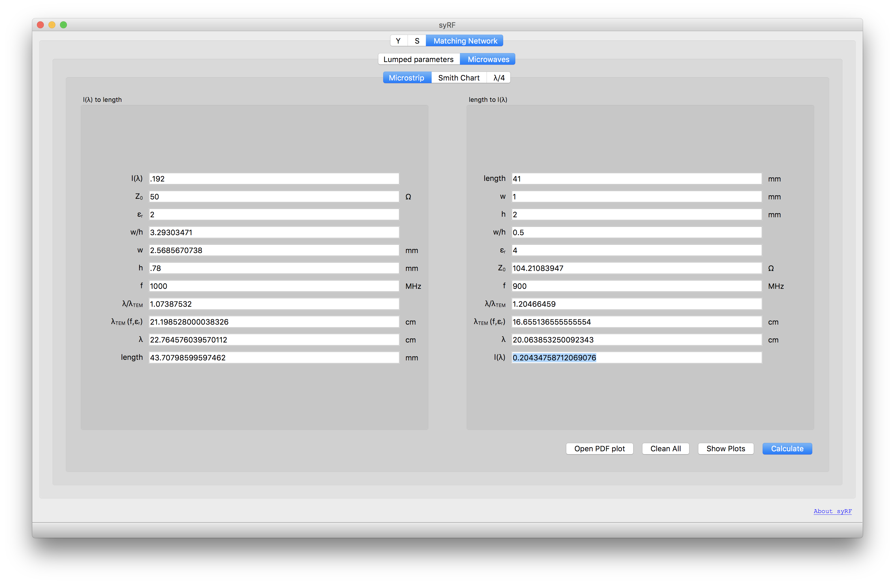
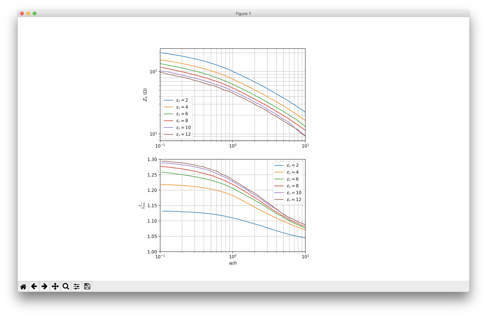
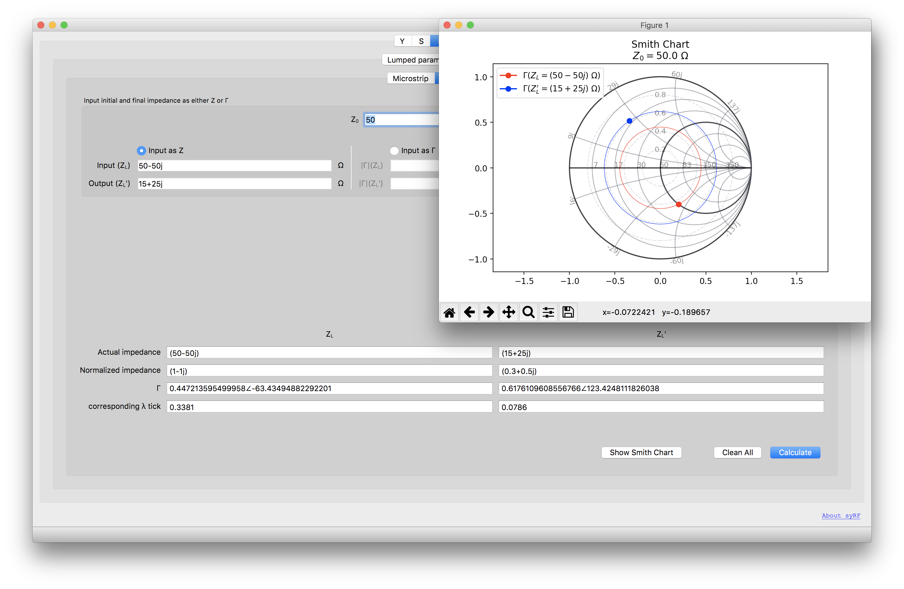
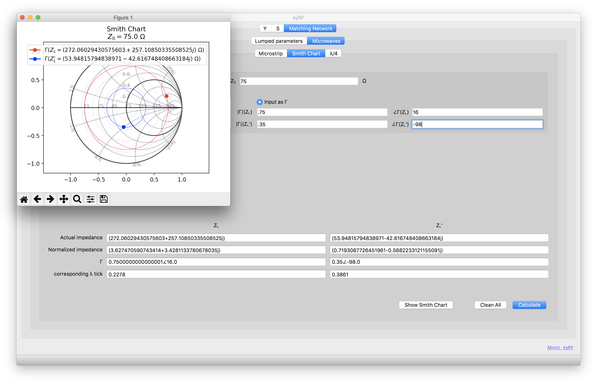

Y parameters
— Either insert the Y parameters by hand or just type the Q point of the 2N4957 pnp transistor and let the program compute them for you.
— Open the Y parameters plot with Matplotlib and read the precise values hovering it with the cursor.
— Compute calculations such as βA and vout/vs and many more instantaneously, right after the data upon which they depend is inserted.
— Provide, when the system is unconditionally stable, the optimum source and load impedances and print the maximum gains achievable.
 S parameters
— Either insert the S parameters by hand or just type the Q point of the MRF571 or MRF572 transistor and let the program compute them for you.
— If provided by the datasheet, also fills the noise parameters such as NFMIN, ΓS,ON, Rn.
— Compute calculations such as GA, GP, GT instantaneously.
— Provide, when the system is unconditionally stable, the optimum source and load impedances and instantly show the maximum gains achievable.
— Visualize the Smith Plot in a tidy and clean fashion.
— Automatically compute, when possible, the intersection between the equi-GA and the equi-NF circumferences.
  Matching network
— Determine some matching parameters both using lumped elements (L-section) and microstrip matching.
— Retrieve data from the respective plots (which can be visualized using Matplotlib) and compute the actual length of the microstrip in a matter of seconds.
  Smith Chart
— Insert values to be shown on the Smith Chart as either impedances referred to Z0 or Γ.
— Visualize the value of λ on the Smith Chart λ scale of these two points.
 